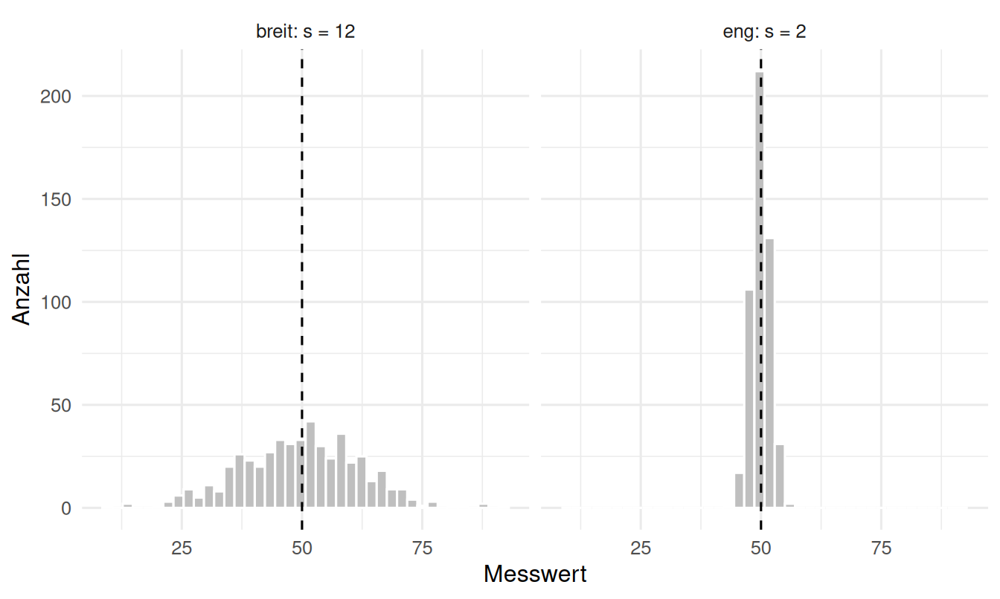
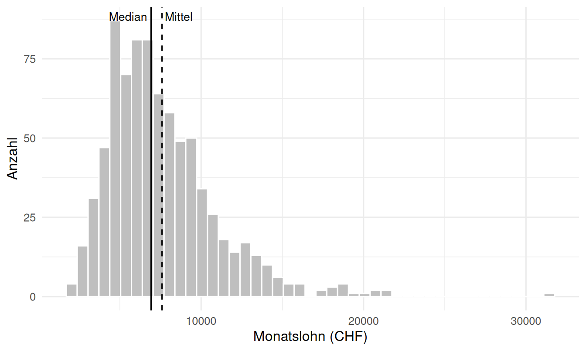
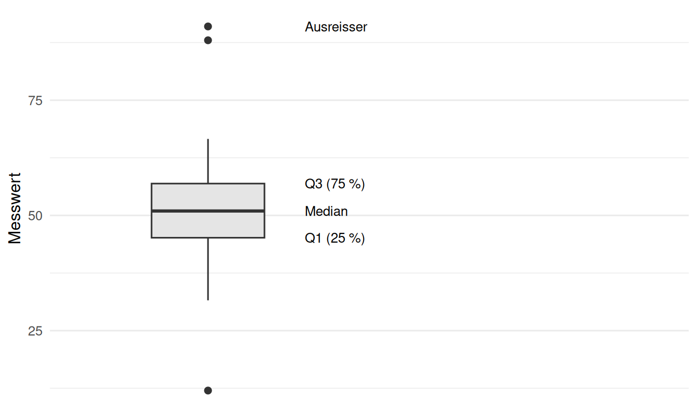
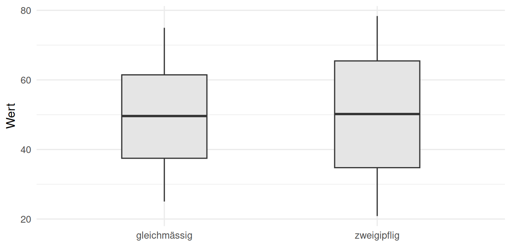
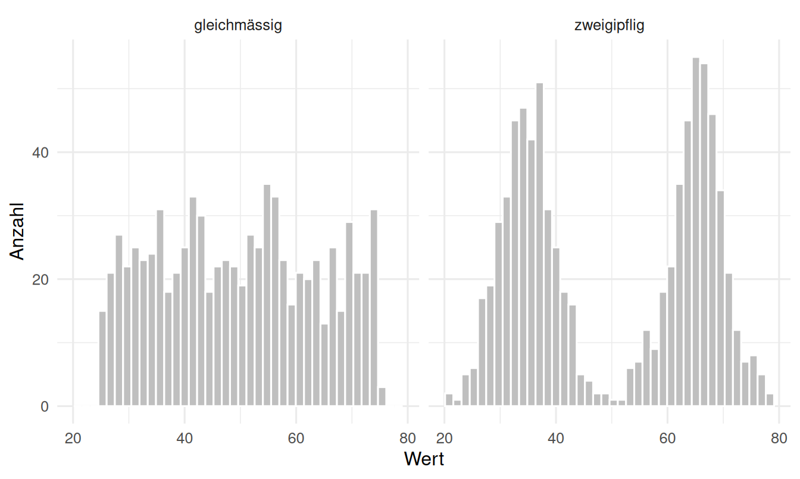

Schiefe und ihre Wirkung auf Mittelwert und Median
Meine Zusammenfassung
Lage und Streuung beantworten zwei verschiedene Fragen: wo liegt die Verteilung, und wie breit ist sie. Beide Angaben gehören zusammen. Ein Mittelwert ohne Streuungsmass ist keine Zusammenfassung, sondern eine halbe Information — die beiden folgenden Datensätze haben denselben Mittelwert und beschreiben trotzdem völlig verschiedene Sachverhalte.
vergleich <-data.frame(wert =c(rnorm(500, mean =50, sd =2), rnorm(500, mean =50, sd =12)),gruppe =rep(c("eng: s = 2", "breit: s = 12"), each =500))ggplot(vergleich, aes(wert)) +geom_histogram(bins =40, fill ="grey75", colour ="white") +geom_vline(xintercept =50, linetype ="dashed") +facet_wrap(~ gruppe) +labs(x ="Messwert", y ="Anzahl")

Figure 1: Zwei Verteilungen mit identischem Mittelwert (gestrichelt) und sehr unterschiedlicher Streuung.
Die Lagemasse und das Skalenniveau
Welches Lagemass zulässig ist, entscheidet das Skalenniveau.
Lagemass
ab Skalenniveau
robust
was es beschreibt
Modus
nominal
ja
die häufigste Ausprägung
Median
ordinal
ja
der Wert in der Mitte der sortierten Reihe
Arithmetisches Mittel
metrisch
nein
der Schwerpunkt der Werte
Der Median teilt die sortierte Reihe in zwei gleich grosse Hälften. Bei ungerader Anzahl ist er der mittlere Wert, bei gerader das Mittel der beiden mittleren. Das arithmetische Mittel
\[\bar{x} = \frac{1}{n}\sum_{i=1}^{n} x_i\]
ist dagegen der Schwerpunkt: die Summe der Abweichungen vom Mittel ist immer null. Genau diese Eigenschaft macht es empfindlich, denn ein weit entfernter Wert zieht den Schwerpunkt mit sich.
Robustheit: was ein einziger Wert anrichtet
Das ist kein akademischer Vorbehalt, sondern der wichtigste praktische Unterschied. Ein einziger Ausreisser verschiebt das Mittel beliebig weit, während der Median fast unberührt bleibt:
x <-c(12, 14, 15, 15, 18, 21)rbind("ohne Ausreisser"=c(mittel =mean(x), median =median(x)),"mit Ausreisser"=c(mittel =mean(c(x, 470)), median =median(c(x, 470)))) |>round(1)
mittel median
ohne Ausreisser 15.8 15
mit Ausreisser 80.7 15
Das Mittel springt um mehr als das Doppelte, der Median rückt um einen halben Punkt. Deshalb gilt: sobald eine Verteilung schief ist oder Ausreisser enthält, beschreibt der Median den typischen Fall besser — und genau darum werden Löhne und Immobilienpreise als Median berichtet.
loehne <-round(rlnorm(800, meanlog =8.85, sdlog =0.42))ggplot(data.frame(lohn = loehne), aes(lohn)) +geom_histogram(bins =45, fill ="grey75", colour ="white") +geom_vline(xintercept =median(loehne)) +geom_vline(xintercept =mean(loehne), linetype ="dashed") +annotate("text", x =median(loehne), y =Inf, label ="Median",vjust =1.6, hjust =1.1, size =3.5) +annotate("text", x =mean(loehne), y =Inf, label ="Mittel",vjust =1.6, hjust =-0.1, size =3.5) +labs(x ="Monatslohn (CHF)", y ="Anzahl")

Figure 2: Rechtsschiefe Verteilung: der lange rechte Rand zieht das Mittel über den Median.
Merkregel für die Schiefe: das Mittel wandert in Richtung des längeren Randes. Liegt es über dem Median, ist die Verteilung rechtsschief; liegt es darunter, linksschief. Bei symmetrischen Verteilungen fallen beide zusammen.
Quantile
Das \(p\)-Quantil ist der Wert, unterhalb dessen ein Anteil \(p\) der Beobachtungen liegt. Der Median ist damit das 0.5-Quantil. Die Quartile teilen die Daten in vier Viertel:
Ein Detail, über das ich sonst stolpern würde: es gibt neun verschiedene Definitionen, wie zwischen zwei Beobachtungen interpoliert wird. R verwendet standardmässig Typ 7 — und NumPy und Pandas rechnen mit derselben linearen Interpolation, sodass beide Sprachen ohne Zutun dasselbe Ergebnis liefern:
Auch hier gibt es die robuste und die empfindliche Familie.
Die Spannweite ist die Differenz zwischen Maximum und Minimum. Sie nutzt nur zwei Werte, wächst systematisch mit der Stichprobengrösse und ist damit das instabilste Mass.
Der Interquartilsabstand umfasst die mittleren fünfzig Prozent, \(\text{IQR} = Q_3 - Q_1\). Er ignoriert die äusseren Viertel vollständig und ist deshalb robust.
Varianz und Standardabweichung nutzen alle Werte:
\[s^2 = \frac{1}{n-1}\sum_{i=1}^{n}(x_i - \bar{x})^2 \qquad s = \sqrt{s^2}\]
Der Nenner \(n-1\) statt \(n\) ist die Bessel-Korrektur. Der Grund: die Abweichungen werden vom geschätzten Mittel gemessen, nicht vom wahren. Um das eigene Mittel streuen die Daten minimal, wodurch die Streuung systematisch unterschätzt würde — \(n-1\) gleicht das aus. R rechnet mit var() und sd() immer so; in Python ist das nicht der Fall, dort steht ddof standardmässig auf 0 und muss auf 1 gesetzt werden.
Weil die Varianz quadriert, steht sie in quadrierten Einheiten und ist nicht direkt lesbar. Die Standardabweichung führt zurück in die Einheit der Daten und ist deshalb das Mass, das berichtet wird. Beide gewichten Abweichungen quadratisch und reagieren damit noch stärker auf Ausreisser als das Mittel.
Der Variationskoeffizient\(v = s / \bar{x}\) setzt die Streuung ins Verhältnis zur Lage und macht Grössenordnungen vergleichbar — sinnvoll nur bei positiven Verhältnisskalen, denn bei einem Mittel nahe null explodiert er:
Der Boxplot bündelt die robuste Familie in einem Bild. Die Box reicht von \(Q_1\) bis \(Q_3\), der Strich darin ist der Median. Die Antennen gehen bis zum am weitesten entfernten Wert, der noch innerhalb von \(1.5 \times \text{IQR}\) ab dem jeweiligen Quartil liegt — alles darüber hinaus wird als Punkt gezeichnet.
werte <-c(rnorm(120, 50, 8), 88, 91, 12)kennz <-quantile(werte, c(0.25, 0.5, 0.75))ggplot(data.frame(werte), aes(y = werte, x =1)) +geom_boxplot(aes(group =1), width =0.35, fill ="grey90", outlier.size =2) +annotate("text", x =1.3, y = kennz[1], label ="Q1 (25 %)", hjust =0, size =3.4) +annotate("text", x =1.3, y = kennz[2], label ="Median", hjust =0, size =3.4) +annotate("text", x =1.3, y = kennz[3], label ="Q3 (75 %)", hjust =0, size =3.4) +annotate("text", x =1.3, y =max(werte), label ="Ausreisser", hjust =0, size =3.4) +scale_x_continuous(limits =c(0.6, 2.4), breaks =NULL, name =NULL) +labs(y ="Messwert")

Figure 3: Anatomie des Boxplots. Die Antennen enden am letzten Wert innerhalb der 1.5-IQR-Grenze, nicht an der Grenze selbst.
Die 1.5-Regel ist eine Konvention, kein Test. Sie markiert Werte, die einen zweiten Blick verdienen — sie beweist nicht, dass ein Wert falsch ist. Bei normalverteilten Daten fallen rund 0.7 Prozent der Beobachtungen darunter, in grossen Stichproben also regelmässig einige, ohne dass irgendetwas schiefgelaufen wäre.
Was der Boxplot verschweigt
Seine Stärke ist der Gruppenvergleich, seine Schwäche die Form. Weil er nur fünf Kennzahlen zeigt, sieht eine zweigipflige Verteilung aus wie eine gleichmässige — hier sind beide Boxplots nahezu identisch, die Histogramme darunter zeigen etwas völlig anderes:
dat <-data.frame(wert =c(c(rnorm(400, 35, 5), rnorm(400, 65, 5)),runif(800, min =25, max =75)),form =rep(c("zweigipflig", "gleichmässig"), each =800))ggplot(dat, aes(x = form, y = wert)) +geom_boxplot(width =0.4, fill ="grey90") +labs(x =NULL, y ="Wert")

Figure 4: Zwei Verteilungen, deren Boxplots kaum zu unterscheiden sind.
ggplot(dat, aes(wert)) +geom_histogram(bins =40, fill ="grey75", colour ="white") +facet_wrap(~ form) +labs(x ="Wert", y ="Anzahl")

Figure 5: Dieselben Daten als Histogramm: erst hier wird der Unterschied sichtbar.
Deshalb gehört zum Boxplot immer ein zweiter Blick auf die Verteilung — Histogramm, Dichtekurve oder bei kleinen Stichproben schlicht die einzelnen Punkte.
Was ich beim Berichten festhalte
Lagemass und Streuungsmass, nie eines allein.
Bei schiefen Daten Median und IQR, bei symmetrischen Mittel und Standardabweichung.
Die Stichprobengrösse dazu, denn ohne \(n\) ist keine Streuungsangabe einzuordnen.
Ausreisser nicht stillschweigend entfernen, sondern benennen.